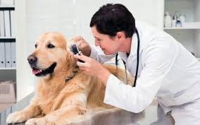
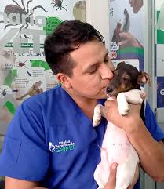

Staff / Equipo Médico
En Mipatita contamos con un equipo de profesionales apasionados por el bienestar animal.
Cada uno de nuestros veterinarios y asistentes combina experiencia clínica con un trato cálido y humano. Nos especializamos en medicina preventiva, diagnóstico, cirugía y atención personalizada para cada mascota.
Creemos que el vínculo entre médico y paciente debe estar basado en confianza, respeto y cariño.
Por eso, en Mipatita, tu mascota siempre estará en manos expertas que la cuidan como tú lo harías.
| Especialidades y fortalezas del equipo | ||||
|---|---|---|---|---|
| 🩺 Medicina general | 💉 Vacunación | 🐾 Rehabilitación | 🔬 Diagnóstico | 🐶 Cirugía menor |
| <=====EQUIPO MEDICO======> | |||
|---|---|---|---|
| Medico | Especialidad | Lema | perfil |
| Ana Torres | Medicina General y Preventiva | Cuidamos cada día para que tu mascota viva más y mejor. | |
| Natalia Ponce | Cirugía Veterinaria | Manos expertas, corazones dedicados al bienestar animal. | |
| Esteban Morales | Diagnóstico por Imagen y Laboratorio | La precisión que tu mascota merece para un diagnóstico seguro. |  |
| Luis Cáceres | Dermatología y Cuidado de la Piel | Piel sana, pelaje brillante, mascotas felices. |  |
| Valeria Núñez | Odontología Veterinaria | Una sonrisa saludable para cada ladrido y maullido. | |